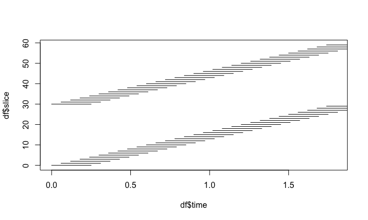

All of this is using the Statistical Parametric Mapping (SPM) (Penny et al. 2011) software version 12: - requies MATLAB (for this tutorial) - All called through spm12r package: https://github.com/muschellij2/spm12r - Many options are specific to this data analysis - All code is found at https://github.com/muschellij2/talks/tree/master/fmri_task_processing
SPM
spm12r Worked Example
Disclaimer: there is no universal fMRI pipeline
Data required for analysis
- One anatomical T1-weighted scan:
anat.nii.gz - One 4D fMRI task-related scan:
fmri.nii.gz. - Information on design:
- onsets/duration of stimuli
- Order of slices (which was first slice)
- or time slice measured (in ms).
- Repetition time (TR) from DICOM header/scanner/tech.
Worked example: DICOM conversion
- DICOM to NIfTI: Convert the data using
dcm2niix(https://github.com/rordenlab/dcm2niix). dcm2niir: https://github.com/muschellij2/dcm2niirdivest: https://github.com/jonclayden/divest
Download the data
https://figshare.com/articles/SFO-example/5442298
url = paste0("https://ndownloader.figshare.com/articles/",
"5442298/versions/1")
# download a temporary zip file
zipfile = tempfile(fileext = ".zip")
res = httr::GET(url, write_disk(path = zipfile))
####### unzip file code (not shown) ###########
out_files = c("anat.nii.gz", "fmri.nii.gz")
fMRI information
fmri_filename = "fmri.nii.gz" tr = 1.8 # seconds # getting nifti header hdr = neurobase::check_nifti_header(fmri_filename) (nslices = oro.nifti::nsli(hdr))
[1] 60
(n_time_points = oro.nifti::ntim(hdr))
[1] 280
hdr
NIfTI-1 format Type : nifti Data Type : 16 (FLOAT32) Bits per Pixel : 32 Slice Code : 0 (Unknown) Intent Code : 0 (None) Qform Code : 1 (Scanner_Anat) Sform Code : 2 (Aligned_Anat) Dimension : 96 x 96 x 60 x 280 Pixel Dimension : 2.25 x 2.25 x 2.55 x 1.8 Voxel Units : mm Time Units : sec
Explore the Raw Data:
http://bit.ly/neuroshiny
Explore the Data
The first part of any preprocessing pipeline should be to use exploratory techniques to investigate the raw image data and detect possible problems and artifacts.
fMRI data often contain transient spike artifacts and slow drift over time.
An exploratory technique such as principal components analysis (PCA) can be used to look for spike-related artifacts.
(courtesy of Martin Lindquist)
Types of Registration
- Rigid-body registration (linear) - 6 degrees of freedom (dof)

Image taken from http://cnl.web.arizona.edu/imageprops.htm
- Pitch - Think of nodding (“yes”)
- Yaw - Think of shaking head (“no”)
- Roll - Think of shoulder shrugging (“I don’t know”)
- x – left/right, y – forward/backward, z – jump up/down
Rigid Registration: The Math
For a voxel \(v\), the rigid transformation can be written as:
\[T_{\rm rigid}(v) = Rv + t\] where \(R =\) \[\left[\begin{array}{ccc} \cos\beta\cos\gamma& \cos\alpha\sin\gamma + \sin\alpha\sin\beta\cos\gamma & \sin\alpha\sin\gamma - \cos\alpha\sin\beta\cos\gamma \\ -\cos\beta\sin\gamma & \cos\alpha\cos\gamma - \sin\alpha\sin\beta\sin\gamma & \sin\alpha\cos\gamma + \cos\alpha\sin\beta\sin\gamma \\ \sin\beta & -\sin\alpha\cos\beta & \cos\alpha\cos\beta \end{array}\right]\]
- 6 degrees of freedom
- \(3\) associated with the translation vector: \(t=(t_x, t_y, t_z)\)
- \(3\) associated with the rotation parameters: \(\theta=(\alpha, \beta,\gamma)\).
Image Realignment: within-fMRI registration

Image Realignment
realigned = spm12_realign(filename = fmri_filename, time_points = seq(n_time_points), quality = 0.98, separation = 3, register_to = "mean", est_interp = "bspline4", reslice_interp = "bspline4") # reading in the mean image mean_img = realigned[["mean"]] mean_nifti = readnii(mean_img) rpfile = realigned[['rp']] rp = read.table(file = rpfile, header = FALSE) realigned$outfiles realigned$mat
[1] "rfmri.nii"
[1] "fmri.mat"
Image Realignment

Plotting the realignment parameters
These can be used as regressors in motion correction for further analyses.
colnames(rp) = c("x", "y", "z", "roll", "pitch", "yaw")
head(rp, 2)

Slice timing correction - temporal alignment

Slice timing correction - temporal alignment
- Repetition time (from
hdr) - Number of time points and slices (from
hdr) - Need the reference slice (
ref_slice), - slice order: descending, dual-coil (different for ascending or interleaved)
- Time between the first and the last slice within one scan (
ta).ta = 0if you give slice order in seconds/milliseconds.
Slice timing correction - temporal alignment
slice_order = c( 1740, 1680, 1620, 1560, 1500, 1440, 1380, 1320, 1260, 1200, 1140, 1080, 1020, 960, 900, 840, 780, 720, 660, 600, 540, 480, 420, 360, 300, 240, 180, 120, 60, 0, 1740, 1680, 1620, 1560, 1500, 1440, 1380, 1320, 1260, 1200, 1140, 1080, 1020, 960, 900, 840, 780, 720, 660, 600, 540, 480, 420, 360, 300, 240, 180, 120, 60, 0) ref_slice = 900 ta = 0 # since slice_order in ms

Slice timing correction - temporal alignment
######################## # first slice is the bottom ######################## times = slice_order/1000 # need 60 - because how image works and it's ascending. 60 is bottom df = data.frame(time = times, slice = 60 - seq(times)) df = dplyr::arrange(df, time) plot(x = df$time, y = df$slice, pch = 19, type = "n", xlim = c(0, 1.8)) segments(x0 = df$time, y0 = df$slice, x1 = df$time + 0.25)

x = nifti(mean_nifti)
x = cal_img(x)
x@.Data <- aperm(x, c(2, 3, 1))
col = gray(0:64/64)
zlim <- c(x@cal_min, x@cal_max)
breaks <- c(zlim[1],
seq(min(zlim, na.rm = TRUE),
max(zlim,
na.rm = TRUE),
length = length(col) - 1), zlim[2])
dims = dim(x)
X <- nrow(x)
Y <- ncol(x)
z = 48
splits = split(df, df$time)
ref_df = splits[[as.character(ref_slice/1000)]]
oldpar <- par(no.readonly = TRUE)
fname = "slice_timing.gif"
if (!file.exists(fname)) {
animation::saveGIF({
par(mfrow = c(1,1), mar = rep(0, 4),
bg = "black")
for (i in seq_along(splits)) {
idf = splits[[i]]
time_slice = unique(idf$time)
graphics::image(1:X, 1:Y, x[, , z], col = col,
breaks = breaks, bg = "black")
abline(h = idf$slice, col = "red", lwd = 5)
abline(h = ref_df$slice, col = "blue", lwd = 5)
text(x = 14, y = 50,
labels = paste0("Time = ", time_slice, "s"),
cex = 1.2, col = "white")
}
}, movie.name = "fname", interval = 1.8/length(splits))
}
fname = "slice_timing_slow.gif"
if (!file.exists(fname)) {
animation::saveGIF({
par(mfrow = c(1,1), mar = rep(0, 4),
bg = "black")
for (i in seq_along(splits)) {
idf = splits[[i]]
time_slice = unique(idf$time)
graphics::image(1:X, 1:Y, x[, , z], col = col,
breaks = breaks, bg = "black")
abline(h = idf$slice, col = "red", lwd = 5)
abline(h = ref_df$slice, col = "blue", lwd = 5)
text(x = 14, y = 50,
labels = paste0("Time = ", time_slice, "s"),
cex = 1.2, col = "white")
}
}, movie.name = fname,
interval = 1.8/length(splits) * 2)
}
par(oldpar)
Slice timing correction - temporal alignment
aimg = spm12_slice_timing(filename = realigned$outfiles, nslices = nslices, tr = tr, slice_order = slice_order, time_points = seq(n_time_points), ta = ta, # since slice order given in ms ref_slice = ref_slice, prefix = "a") print(aimg$outfile)
T1 Coregistration to Mean fMRI
We then perform the coregistration using spm12_coregister_estimate, where the fixed image is the mean image and the moving image is the anatomical.
t1_fname = "anat.nii.gz" coreg = spm12_coregister_estimate( fixed = mean_img, moving = t1_fname, cost_fun = "nmi") coreg$outfile
[1] "anat.nii"
T1 Coregistration to Mean fMRI
Nothing happened!
spm12_coregister_estimate- estimates coregistration (transforms the header)spm12_coregister_reslice- reslices the image to the same voxel dimensions (should probably be coregistered already usingestimate)spm12_coregister- estimates and reslices all in one.Estimate the transformation, but do segmentation on native T1 space (better resolution)
Anatomical MRI Segmentation
Here we segment the image into 6 different regions, where the regions are gray matter, white matter, cerebrospinal fluid (CSF), bone, soft tissue, and the background.
seg = spm12_segment( filename = coreg$outfile, set_origin = FALSE, bias_corrected = TRUE, native = TRUE, unmodulated = TRUE, modulated = TRUE, affine = "mni", sampling_distance = 1.5)
Anatomical MRI Segmentation
native- native space segmentationsmodulated- adjusted segmentations to constrain tissue-class volumesunmodulated- unadjustedbias_corrected- save bias-field corrected imageset_origin- should AC/PC alignment be done (no because we just coregistered)
Anatomical MRI Segmentation


Spatial normalization to MNI
- My brain is not the same size/shape as your brain
- But I want to look at information across subjects spatially
- Spatial normalization allows us to transform the data, stretching and scaling the data (nonlinearly) to a standard brain.
- MNI (Montreal Neurological Institute) is the most commonly used (ICBM MNI152 of some sort, http://www.bic.mni.mcgill.ca/ServicesAtlases/ICBM152NLin2009).
Spatial normalization to MNI
Affine + Non-linear transform (invertible)

Spatial normalization to MNI: already done
The segmentation was done by warping the T1 to the MNI template and that transform/deformation in the segmentation output:
seg$deformation
[1] "y_anat.nii"
Applying spatial normalization: fMRI
We apply the deformation to the fMRI data using spm12_normalize_write.
bounding_box = matrix(
c(-78, -112, -70,
78, 76, 85), nrow = 2,
byrow = TRUE)
norm = spm12_normalize_write(
deformation = seg$deformation,
other.files = aimg$outfile, #corrected fMRI
bounding_box = bounding_box,
interp = "bspline5")
Applying spatial normalization: T1
anat_norm = spm12_normalize_write( deformation = seg$deformation, other.files = seg$bias_corrected, bounding_box = bounding_box, interp = "bspline5", voxel_size = c(1, 1, 1), retimg = FALSE )
Applying spatial normalization: T1, but 2x2x2
anat_norm2x2x2 = spm12_normalize_write( deformation = seg$deformation, other.files = seg$bias_corrected, bounding_box = bounding_box, interp = "bspline5", voxel_size = c(2, 2, 2), # note the resolution!!! retimg = FALSE )
Spatial smoothing using a Gaussian
- Spatial smoothing should signal to noise depending on the size of activation
- Specified using the full-width half max (FWHM) for the Gaussian smoother.
Relationship between the FWHM and the Gaussian \(\sigma\):
\[ FWHM = \sigma \sqrt{8 \log(2)} \] where \(\log\) is the natural log.
{kind=link}
Spatial smoothing using a Gaussian
- Spatial smoothing should signal to noise depending on the size of activation
- Specified using the full-width half max (FWHM) for the Gaussian smoother.
– Typically, the amount of smoothing is chosen a priori and independently of the data. (ML) – Usually global smoothing (same amount at each voxel), but can be adaptive (adimpropacakge)
Relationship between the FWHM and the Gaussian \(\sigma\):
\[ FWHM = \sigma \sqrt{8 \log(2)} \] where \(\log\) is the natural log.
Spatial smoothing using a Gaussian
smooth_norm = spm12_smooth( norm$outfiles[[1]], fwhm = 5, prefix = "s5", retimg = FALSE)
In many applications, this is the data you will use for post-processing and analysis. Motion correction has usually been applied above, but some motion correct this data as well.
First Level Modeling
Single-Subject Model
Estimate Model
Contrast Manager - Creating Contrasts
There is no universal fMRI pipeline
- Each step has inherent drawback and limitation (spatial resolution, artifact smoothing, etc.)
- A few different pipelines should be tested.
- Not necessarily all combinations, but change the “knobs” a bit
- Similar to sensitivity analysis
References
Penny, William D, Karl J Friston, John T Ashburner, Stefan J Kiebel, and Thomas E Nichols. 2011. Statistical Parametric Mapping: The Analysis of Functional Brain Images. Academic press.